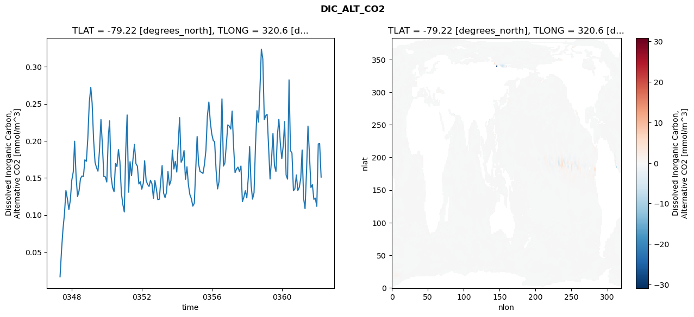
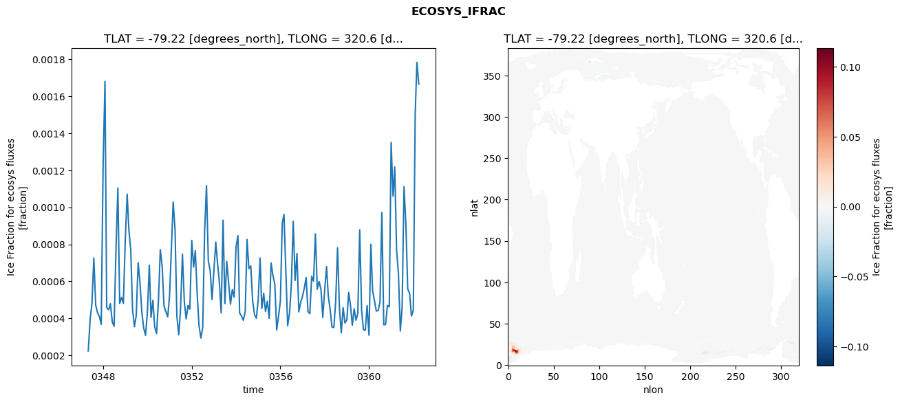
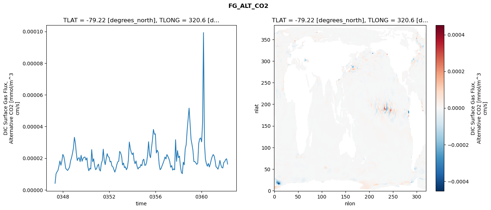
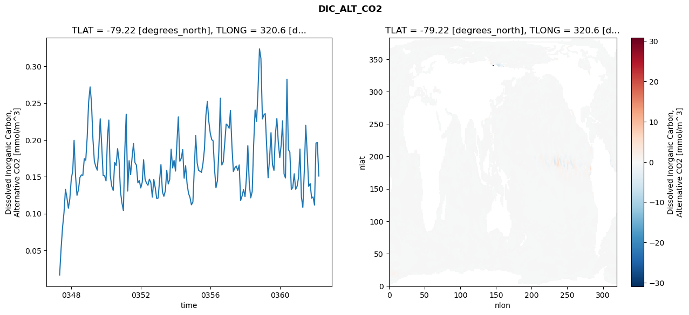
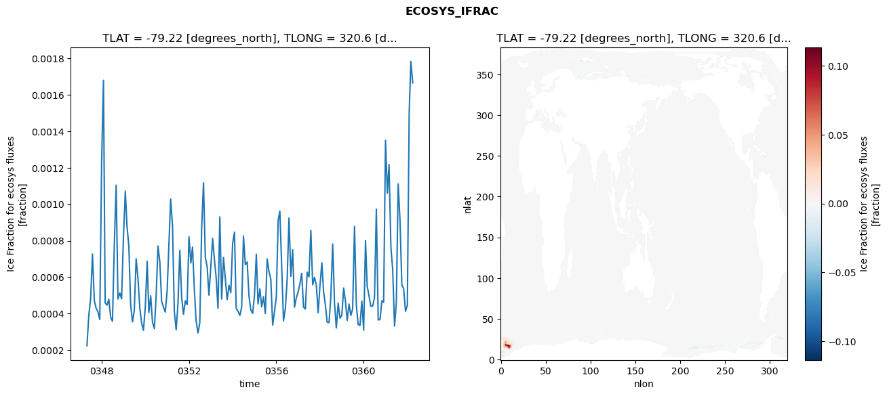
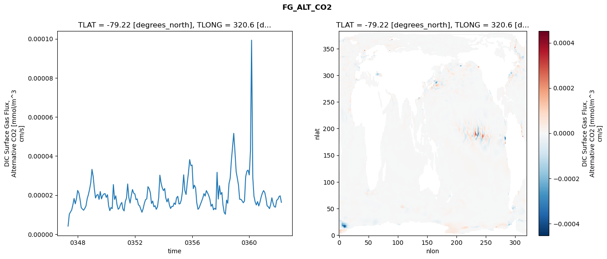

glb-dor_North_Atlantic_basin_022_1999-04-01_00089#
Simulation details#
Case: smyle.cdr-atlas-v0.glb-dor_North_Atlantic_basin_022_1999-04-01_00089.001
Basin: North_Atlantic_basin
Polygon: 22.0
Start date: 1999-04
Show code cell source Hide code cell source
import xarray as xr
import matplotlib.pyplot as plt
Show code cell source Hide code cell source
zarr_store = "/path/to/zarr/store"
# Parameters
zarr_store = "/global/cfs/projectdirs/m4746/Projects/Ocean-CDR-Atlas-v0/data/validation/smyle.cdr-atlas-v0.glb-dor_North_Atlantic_basin_022_1999-04-01_00089.001.validation.zarr"
Show code cell source Hide code cell source
%%time
ds_o = xr.open_zarr(zarr_store).compute()
ds_o
CPU times: user 705 ms, sys: 455 ms, total: 1.16 s
Wall time: 1.5 s
<xarray.Dataset> Size: 2MB
Dimensions: (nlat: 384, nlon: 320, time: 180)
Coordinates:
TLAT float64 8B -79.22
TLONG float64 8B 320.6
ULAT float64 8B -78.95
ULONG float64 8B 321.1
* time (time) object 1kB 0347-05-01 00:00:00 ... 0362-04-01 0...
z_t float32 4B 500.0
Dimensions without coordinates: nlat, nlon
Data variables:
ALK_ALT_CO2_diff (nlat, nlon) float32 492kB nan nan nan ... nan nan nan
ALK_ALT_CO2_rmse (time) float64 1kB 0.01176 0.03834 ... 0.1882 0.1113
DIC_ALT_CO2_diff (nlat, nlon) float32 492kB nan nan nan ... nan nan nan
DIC_ALT_CO2_rmse (time) float64 1kB 0.01654 0.05228 ... 0.1964 0.1511
ECOSYS_IFRAC_diff (nlat, nlon) float32 492kB nan nan nan ... nan nan nan
ECOSYS_IFRAC_rmse (time) float64 1kB 0.0002241 0.0003928 ... 0.001665
FG_ALT_CO2_diff (nlat, nlon) float32 492kB nan nan nan ... nan nan nan
FG_ALT_CO2_rmse (time) float64 1kB 4.117e-06 1.019e-05 ... 1.627e-05xarray.Dataset
- nlat: 384
- nlon: 320
- time: 180
- TLAT()float64-79.22
- long_name :
- array of t-grid latitudes
- units :
- degrees_north
array(-79.22052261)
- TLONG()float64320.6
- long_name :
- array of t-grid longitudes
- units :
- degrees_east
array(320.56250892)
- ULAT()float64-78.95
- long_name :
- array of u-grid latitudes
- units :
- degrees_north
array(-78.95289509)
- ULONG()float64321.1
- long_name :
- array of u-grid longitudes
- units :
- degrees_east
array(321.12500894)
- time(time)object0347-05-01 00:00:00 ... 0362-04-...
- bounds :
- time_bound
- long_name :
- time
array([cftime.DatetimeNoLeap(347, 5, 1, 0, 0, 0, 0, has_year_zero=True), cftime.DatetimeNoLeap(347, 6, 1, 0, 0, 0, 0, has_year_zero=True), cftime.DatetimeNoLeap(347, 7, 1, 0, 0, 0, 0, has_year_zero=True), cftime.DatetimeNoLeap(347, 8, 1, 0, 0, 0, 0, has_year_zero=True), cftime.DatetimeNoLeap(347, 9, 1, 0, 0, 0, 0, has_year_zero=True), cftime.DatetimeNoLeap(347, 10, 1, 0, 0, 0, 0, has_year_zero=True), cftime.DatetimeNoLeap(347, 11, 1, 0, 0, 0, 0, has_year_zero=True), cftime.DatetimeNoLeap(347, 12, 1, 0, 0, 0, 0, has_year_zero=True), cftime.DatetimeNoLeap(348, 1, 1, 0, 0, 0, 0, has_year_zero=True), cftime.DatetimeNoLeap(348, 2, 1, 0, 0, 0, 0, has_year_zero=True), cftime.DatetimeNoLeap(348, 3, 1, 0, 0, 0, 0, has_year_zero=True), cftime.DatetimeNoLeap(348, 4, 1, 0, 0, 0, 0, has_year_zero=True), cftime.DatetimeNoLeap(348, 5, 1, 0, 0, 0, 0, has_year_zero=True), cftime.DatetimeNoLeap(348, 6, 1, 0, 0, 0, 0, has_year_zero=True), cftime.DatetimeNoLeap(348, 7, 1, 0, 0, 0, 0, has_year_zero=True), cftime.DatetimeNoLeap(348, 8, 1, 0, 0, 0, 0, has_year_zero=True), cftime.DatetimeNoLeap(348, 9, 1, 0, 0, 0, 0, has_year_zero=True), cftime.DatetimeNoLeap(348, 10, 1, 0, 0, 0, 0, has_year_zero=True), cftime.DatetimeNoLeap(348, 11, 1, 0, 0, 0, 0, has_year_zero=True), cftime.DatetimeNoLeap(348, 12, 1, 0, 0, 0, 0, has_year_zero=True), cftime.DatetimeNoLeap(349, 1, 1, 0, 0, 0, 0, has_year_zero=True), cftime.DatetimeNoLeap(349, 2, 1, 0, 0, 0, 0, has_year_zero=True), cftime.DatetimeNoLeap(349, 3, 1, 0, 0, 0, 0, has_year_zero=True), cftime.DatetimeNoLeap(349, 4, 1, 0, 0, 0, 0, has_year_zero=True), cftime.DatetimeNoLeap(349, 5, 1, 0, 0, 0, 0, has_year_zero=True), cftime.DatetimeNoLeap(349, 6, 1, 0, 0, 0, 0, has_year_zero=True), cftime.DatetimeNoLeap(349, 7, 1, 0, 0, 0, 0, has_year_zero=True), cftime.DatetimeNoLeap(349, 8, 1, 0, 0, 0, 0, has_year_zero=True), cftime.DatetimeNoLeap(349, 9, 1, 0, 0, 0, 0, has_year_zero=True), cftime.DatetimeNoLeap(349, 10, 1, 0, 0, 0, 0, has_year_zero=True), cftime.DatetimeNoLeap(349, 11, 1, 0, 0, 0, 0, has_year_zero=True), cftime.DatetimeNoLeap(349, 12, 1, 0, 0, 0, 0, has_year_zero=True), cftime.DatetimeNoLeap(350, 1, 1, 0, 0, 0, 0, has_year_zero=True), cftime.DatetimeNoLeap(350, 2, 1, 0, 0, 0, 0, has_year_zero=True), cftime.DatetimeNoLeap(350, 3, 1, 0, 0, 0, 0, has_year_zero=True), cftime.DatetimeNoLeap(350, 4, 1, 0, 0, 0, 0, has_year_zero=True), cftime.DatetimeNoLeap(350, 5, 1, 0, 0, 0, 0, has_year_zero=True), cftime.DatetimeNoLeap(350, 6, 1, 0, 0, 0, 0, has_year_zero=True), cftime.DatetimeNoLeap(350, 7, 1, 0, 0, 0, 0, has_year_zero=True), cftime.DatetimeNoLeap(350, 8, 1, 0, 0, 0, 0, has_year_zero=True), cftime.DatetimeNoLeap(350, 9, 1, 0, 0, 0, 0, has_year_zero=True), cftime.DatetimeNoLeap(350, 10, 1, 0, 0, 0, 0, has_year_zero=True), cftime.DatetimeNoLeap(350, 11, 1, 0, 0, 0, 0, has_year_zero=True), cftime.DatetimeNoLeap(350, 12, 1, 0, 0, 0, 0, has_year_zero=True), cftime.DatetimeNoLeap(351, 1, 1, 0, 0, 0, 0, has_year_zero=True), cftime.DatetimeNoLeap(351, 2, 1, 0, 0, 0, 0, has_year_zero=True), cftime.DatetimeNoLeap(351, 3, 1, 0, 0, 0, 0, has_year_zero=True), cftime.DatetimeNoLeap(351, 4, 1, 0, 0, 0, 0, has_year_zero=True), cftime.DatetimeNoLeap(351, 5, 1, 0, 0, 0, 0, has_year_zero=True), cftime.DatetimeNoLeap(351, 6, 1, 0, 0, 0, 0, has_year_zero=True), cftime.DatetimeNoLeap(351, 7, 1, 0, 0, 0, 0, has_year_zero=True), cftime.DatetimeNoLeap(351, 8, 1, 0, 0, 0, 0, has_year_zero=True), cftime.DatetimeNoLeap(351, 9, 1, 0, 0, 0, 0, has_year_zero=True), cftime.DatetimeNoLeap(351, 10, 1, 0, 0, 0, 0, has_year_zero=True), cftime.DatetimeNoLeap(351, 11, 1, 0, 0, 0, 0, has_year_zero=True), cftime.DatetimeNoLeap(351, 12, 1, 0, 0, 0, 0, has_year_zero=True), cftime.DatetimeNoLeap(352, 1, 1, 0, 0, 0, 0, has_year_zero=True), cftime.DatetimeNoLeap(352, 2, 1, 0, 0, 0, 0, has_year_zero=True), cftime.DatetimeNoLeap(352, 3, 1, 0, 0, 0, 0, has_year_zero=True), cftime.DatetimeNoLeap(352, 4, 1, 0, 0, 0, 0, has_year_zero=True), cftime.DatetimeNoLeap(352, 5, 1, 0, 0, 0, 0, has_year_zero=True), cftime.DatetimeNoLeap(352, 6, 1, 0, 0, 0, 0, has_year_zero=True), cftime.DatetimeNoLeap(352, 7, 1, 0, 0, 0, 0, has_year_zero=True), cftime.DatetimeNoLeap(352, 8, 1, 0, 0, 0, 0, has_year_zero=True), cftime.DatetimeNoLeap(352, 9, 1, 0, 0, 0, 0, has_year_zero=True), cftime.DatetimeNoLeap(352, 10, 1, 0, 0, 0, 0, has_year_zero=True), cftime.DatetimeNoLeap(352, 11, 1, 0, 0, 0, 0, has_year_zero=True), cftime.DatetimeNoLeap(352, 12, 1, 0, 0, 0, 0, has_year_zero=True), cftime.DatetimeNoLeap(353, 1, 1, 0, 0, 0, 0, has_year_zero=True), cftime.DatetimeNoLeap(353, 2, 1, 0, 0, 0, 0, has_year_zero=True), cftime.DatetimeNoLeap(353, 3, 1, 0, 0, 0, 0, has_year_zero=True), cftime.DatetimeNoLeap(353, 4, 1, 0, 0, 0, 0, has_year_zero=True), cftime.DatetimeNoLeap(353, 5, 1, 0, 0, 0, 0, has_year_zero=True), cftime.DatetimeNoLeap(353, 6, 1, 0, 0, 0, 0, has_year_zero=True), cftime.DatetimeNoLeap(353, 7, 1, 0, 0, 0, 0, has_year_zero=True), cftime.DatetimeNoLeap(353, 8, 1, 0, 0, 0, 0, has_year_zero=True), cftime.DatetimeNoLeap(353, 9, 1, 0, 0, 0, 0, has_year_zero=True), cftime.DatetimeNoLeap(353, 10, 1, 0, 0, 0, 0, has_year_zero=True), cftime.DatetimeNoLeap(353, 11, 1, 0, 0, 0, 0, has_year_zero=True), cftime.DatetimeNoLeap(353, 12, 1, 0, 0, 0, 0, has_year_zero=True), cftime.DatetimeNoLeap(354, 1, 1, 0, 0, 0, 0, has_year_zero=True), cftime.DatetimeNoLeap(354, 2, 1, 0, 0, 0, 0, has_year_zero=True), cftime.DatetimeNoLeap(354, 3, 1, 0, 0, 0, 0, has_year_zero=True), cftime.DatetimeNoLeap(354, 4, 1, 0, 0, 0, 0, has_year_zero=True), cftime.DatetimeNoLeap(354, 5, 1, 0, 0, 0, 0, has_year_zero=True), cftime.DatetimeNoLeap(354, 6, 1, 0, 0, 0, 0, has_year_zero=True), cftime.DatetimeNoLeap(354, 7, 1, 0, 0, 0, 0, has_year_zero=True), cftime.DatetimeNoLeap(354, 8, 1, 0, 0, 0, 0, has_year_zero=True), cftime.DatetimeNoLeap(354, 9, 1, 0, 0, 0, 0, has_year_zero=True), cftime.DatetimeNoLeap(354, 10, 1, 0, 0, 0, 0, has_year_zero=True), cftime.DatetimeNoLeap(354, 11, 1, 0, 0, 0, 0, has_year_zero=True), cftime.DatetimeNoLeap(354, 12, 1, 0, 0, 0, 0, has_year_zero=True), cftime.DatetimeNoLeap(355, 1, 1, 0, 0, 0, 0, has_year_zero=True), cftime.DatetimeNoLeap(355, 2, 1, 0, 0, 0, 0, has_year_zero=True), cftime.DatetimeNoLeap(355, 3, 1, 0, 0, 0, 0, has_year_zero=True), cftime.DatetimeNoLeap(355, 4, 1, 0, 0, 0, 0, has_year_zero=True), cftime.DatetimeNoLeap(355, 5, 1, 0, 0, 0, 0, has_year_zero=True), cftime.DatetimeNoLeap(355, 6, 1, 0, 0, 0, 0, has_year_zero=True), cftime.DatetimeNoLeap(355, 7, 1, 0, 0, 0, 0, has_year_zero=True), cftime.DatetimeNoLeap(355, 8, 1, 0, 0, 0, 0, has_year_zero=True), cftime.DatetimeNoLeap(355, 9, 1, 0, 0, 0, 0, has_year_zero=True), cftime.DatetimeNoLeap(355, 10, 1, 0, 0, 0, 0, has_year_zero=True), cftime.DatetimeNoLeap(355, 11, 1, 0, 0, 0, 0, has_year_zero=True), cftime.DatetimeNoLeap(355, 12, 1, 0, 0, 0, 0, has_year_zero=True), cftime.DatetimeNoLeap(356, 1, 1, 0, 0, 0, 0, has_year_zero=True), cftime.DatetimeNoLeap(356, 2, 1, 0, 0, 0, 0, has_year_zero=True), cftime.DatetimeNoLeap(356, 3, 1, 0, 0, 0, 0, has_year_zero=True), cftime.DatetimeNoLeap(356, 4, 1, 0, 0, 0, 0, has_year_zero=True), cftime.DatetimeNoLeap(356, 5, 1, 0, 0, 0, 0, has_year_zero=True), cftime.DatetimeNoLeap(356, 6, 1, 0, 0, 0, 0, has_year_zero=True), cftime.DatetimeNoLeap(356, 7, 1, 0, 0, 0, 0, has_year_zero=True), cftime.DatetimeNoLeap(356, 8, 1, 0, 0, 0, 0, has_year_zero=True), cftime.DatetimeNoLeap(356, 9, 1, 0, 0, 0, 0, has_year_zero=True), cftime.DatetimeNoLeap(356, 10, 1, 0, 0, 0, 0, has_year_zero=True), cftime.DatetimeNoLeap(356, 11, 1, 0, 0, 0, 0, has_year_zero=True), cftime.DatetimeNoLeap(356, 12, 1, 0, 0, 0, 0, has_year_zero=True), cftime.DatetimeNoLeap(357, 1, 1, 0, 0, 0, 0, has_year_zero=True), cftime.DatetimeNoLeap(357, 2, 1, 0, 0, 0, 0, has_year_zero=True), cftime.DatetimeNoLeap(357, 3, 1, 0, 0, 0, 0, has_year_zero=True), cftime.DatetimeNoLeap(357, 4, 1, 0, 0, 0, 0, has_year_zero=True), cftime.DatetimeNoLeap(357, 5, 1, 0, 0, 0, 0, has_year_zero=True), cftime.DatetimeNoLeap(357, 6, 1, 0, 0, 0, 0, has_year_zero=True), cftime.DatetimeNoLeap(357, 7, 1, 0, 0, 0, 0, has_year_zero=True), cftime.DatetimeNoLeap(357, 8, 1, 0, 0, 0, 0, has_year_zero=True), cftime.DatetimeNoLeap(357, 9, 1, 0, 0, 0, 0, has_year_zero=True), cftime.DatetimeNoLeap(357, 10, 1, 0, 0, 0, 0, has_year_zero=True), cftime.DatetimeNoLeap(357, 11, 1, 0, 0, 0, 0, has_year_zero=True), cftime.DatetimeNoLeap(357, 12, 1, 0, 0, 0, 0, has_year_zero=True), cftime.DatetimeNoLeap(358, 1, 1, 0, 0, 0, 0, has_year_zero=True), cftime.DatetimeNoLeap(358, 2, 1, 0, 0, 0, 0, has_year_zero=True), cftime.DatetimeNoLeap(358, 3, 1, 0, 0, 0, 0, has_year_zero=True), cftime.DatetimeNoLeap(358, 4, 1, 0, 0, 0, 0, has_year_zero=True), cftime.DatetimeNoLeap(358, 5, 1, 0, 0, 0, 0, has_year_zero=True), cftime.DatetimeNoLeap(358, 6, 1, 0, 0, 0, 0, has_year_zero=True), cftime.DatetimeNoLeap(358, 7, 1, 0, 0, 0, 0, has_year_zero=True), cftime.DatetimeNoLeap(358, 8, 1, 0, 0, 0, 0, has_year_zero=True), cftime.DatetimeNoLeap(358, 9, 1, 0, 0, 0, 0, has_year_zero=True), cftime.DatetimeNoLeap(358, 10, 1, 0, 0, 0, 0, has_year_zero=True), cftime.DatetimeNoLeap(358, 11, 1, 0, 0, 0, 0, has_year_zero=True), cftime.DatetimeNoLeap(358, 12, 1, 0, 0, 0, 0, has_year_zero=True), cftime.DatetimeNoLeap(359, 1, 1, 0, 0, 0, 0, has_year_zero=True), cftime.DatetimeNoLeap(359, 2, 1, 0, 0, 0, 0, has_year_zero=True), cftime.DatetimeNoLeap(359, 3, 1, 0, 0, 0, 0, has_year_zero=True), cftime.DatetimeNoLeap(359, 4, 1, 0, 0, 0, 0, has_year_zero=True), cftime.DatetimeNoLeap(359, 5, 1, 0, 0, 0, 0, has_year_zero=True), cftime.DatetimeNoLeap(359, 6, 1, 0, 0, 0, 0, has_year_zero=True), cftime.DatetimeNoLeap(359, 7, 1, 0, 0, 0, 0, has_year_zero=True), cftime.DatetimeNoLeap(359, 8, 1, 0, 0, 0, 0, has_year_zero=True), cftime.DatetimeNoLeap(359, 9, 1, 0, 0, 0, 0, has_year_zero=True), cftime.DatetimeNoLeap(359, 10, 1, 0, 0, 0, 0, has_year_zero=True), cftime.DatetimeNoLeap(359, 11, 1, 0, 0, 0, 0, has_year_zero=True), cftime.DatetimeNoLeap(359, 12, 1, 0, 0, 0, 0, has_year_zero=True), cftime.DatetimeNoLeap(360, 1, 1, 0, 0, 0, 0, has_year_zero=True), cftime.DatetimeNoLeap(360, 2, 1, 0, 0, 0, 0, has_year_zero=True), cftime.DatetimeNoLeap(360, 3, 1, 0, 0, 0, 0, has_year_zero=True), cftime.DatetimeNoLeap(360, 4, 1, 0, 0, 0, 0, has_year_zero=True), cftime.DatetimeNoLeap(360, 5, 1, 0, 0, 0, 0, has_year_zero=True), cftime.DatetimeNoLeap(360, 6, 1, 0, 0, 0, 0, has_year_zero=True), cftime.DatetimeNoLeap(360, 7, 1, 0, 0, 0, 0, has_year_zero=True), cftime.DatetimeNoLeap(360, 8, 1, 0, 0, 0, 0, has_year_zero=True), cftime.DatetimeNoLeap(360, 9, 1, 0, 0, 0, 0, has_year_zero=True), cftime.DatetimeNoLeap(360, 10, 1, 0, 0, 0, 0, has_year_zero=True), cftime.DatetimeNoLeap(360, 11, 1, 0, 0, 0, 0, has_year_zero=True), cftime.DatetimeNoLeap(360, 12, 1, 0, 0, 0, 0, has_year_zero=True), cftime.DatetimeNoLeap(361, 1, 1, 0, 0, 0, 0, has_year_zero=True), cftime.DatetimeNoLeap(361, 2, 1, 0, 0, 0, 0, has_year_zero=True), cftime.DatetimeNoLeap(361, 3, 1, 0, 0, 0, 0, has_year_zero=True), cftime.DatetimeNoLeap(361, 4, 1, 0, 0, 0, 0, has_year_zero=True), cftime.DatetimeNoLeap(361, 5, 1, 0, 0, 0, 0, has_year_zero=True), cftime.DatetimeNoLeap(361, 6, 1, 0, 0, 0, 0, has_year_zero=True), cftime.DatetimeNoLeap(361, 7, 1, 0, 0, 0, 0, has_year_zero=True), cftime.DatetimeNoLeap(361, 8, 1, 0, 0, 0, 0, has_year_zero=True), cftime.DatetimeNoLeap(361, 9, 1, 0, 0, 0, 0, has_year_zero=True), cftime.DatetimeNoLeap(361, 10, 1, 0, 0, 0, 0, has_year_zero=True), cftime.DatetimeNoLeap(361, 11, 1, 0, 0, 0, 0, has_year_zero=True), cftime.DatetimeNoLeap(361, 12, 1, 0, 0, 0, 0, has_year_zero=True), cftime.DatetimeNoLeap(362, 1, 1, 0, 0, 0, 0, has_year_zero=True), cftime.DatetimeNoLeap(362, 2, 1, 0, 0, 0, 0, has_year_zero=True), cftime.DatetimeNoLeap(362, 3, 1, 0, 0, 0, 0, has_year_zero=True), cftime.DatetimeNoLeap(362, 4, 1, 0, 0, 0, 0, has_year_zero=True)], dtype=object) - z_t()float32500.0
- long_name :
- depth from surface to midpoint of layer
- positive :
- down
- units :
- centimeters
- valid_max :
- 537500.0
- valid_min :
- 500.0
array(500., dtype=float32)
- ALK_ALT_CO2_diff(nlat, nlon)float32nan nan nan nan ... nan nan nan nan
- cell_methods :
- time: mean
- grid_loc :
- 3111
- long_name :
- Alkalinity, Alternative CO2
- units :
- meq/m^3
array([[ nan, nan, nan, ..., nan, nan, nan], [ nan, nan, nan, ..., nan, nan, nan], [-0.02685547, -0.01342773, -0.00292969, ..., nan, nan, nan], ..., [ nan, nan, nan, ..., nan, nan, nan], [ nan, nan, nan, ..., nan, nan, nan], [ nan, nan, nan, ..., nan, nan, nan]], dtype=float32) - ALK_ALT_CO2_rmse(time)float640.01176 0.03834 ... 0.1882 0.1113
- cell_methods :
- time: mean
- grid_loc :
- 3111
- long_name :
- Alkalinity, Alternative CO2
- units :
- meq/m^3
array([0.01176019, 0.03834361, 0.04988765, 0.06362867, 0.09834957, 0.06130279, 0.06323188, 0.04670626, 0.06060662, 0.0831075 , 0.17405264, 0.11786063, 0.09708742, 0.10618389, 0.10738351, 0.09610747, 0.08105002, 0.10354512, 0.07185077, 0.09535346, 0.13194353, 0.17741838, 0.19699963, 0.152501 , 0.12906086, 0.12465748, 0.11172406, 0.14696422, 0.1997816 , 0.14662573, 0.08661747, 0.07183813, 0.07024174, 0.16579432, 0.21540831, 0.12535123, 0.11199084, 0.10691026, 0.14238431, 0.13233317, 0.15566519, 0.14021975, 0.09352649, 0.06742686, 0.05885978, 0.18076618, 0.23953818, 0.11024315, 0.16369032, 0.12747095, 0.14397885, 0.16927262, 0.13917845, 0.10789478, 0.07587763, 0.07367951, 0.07258938, 0.08787015, 0.14127833, 0.10991456, 0.10737452, 0.11094684, 0.11309358, 0.09192051, 0.06766872, 0.08995354, 0.08434731, 0.06526069, 0.07170031, 0.1188537 , 0.15148111, 0.10299528, 0.09977633, 0.11142348, 0.14136111, 0.10772147, 0.07661492, 0.07410102, 0.0909781 , 0.07801851, 0.0773668 , 0.13601419, 0.19430436, 0.11663115, 0.12676583, 0.15449463, 0.10787933, 0.14053265, 0.09768561, 0.06922398, 0.07445571, 0.05854641, 0.06704039, 0.14253453, 0.17494269, 0.12267632, 0.09734274, 0.12625209, 0.12278958, 0.13361437, 0.14465892, 0.13070407, 0.14095162, 0.10938081, 0.09329836, 0.09926359, 0.11742918, 0.08850199, 0.08790914, 0.10093855, 0.14529811, 0.23655816, 0.11932548, 0.09868562, 0.12656905, 0.14937573, 0.1546307 , 0.1600071 , 0.20624157, 0.16273625, 0.12164372, 0.14064144, 0.1354069 , 0.13008076, 0.15799397, 0.08896626, 0.09554821, 0.10680296, 0.09096159, 0.13523796, 0.19292266, 0.13331594, 0.1109986 , 0.10103818, 0.16047888, 0.20021355, 0.12844985, 0.08824947, 0.10194809, 0.11485777, 0.10538873, 0.11404414, 0.11373658, 0.10785825, 0.09667281, 0.1519707 , 0.18862888, 0.13311245, 0.08544333, 0.11038631, 0.09063543, 0.08684012, 0.0819474 , 0.11671375, 0.1715537 , 0.09640315, 0.1166075 , 0.27957961, 0.16120162, 0.17094719, 0.09598164, 0.10160216, 0.11923301, 0.08182575, 0.08226956, 0.10454252, 0.16784387, 0.08590321, 0.07945702, 0.14873732, 0.21102774, 0.15961271, 0.1032635 , 0.11249243, 0.08762554, 0.08083682, 0.06543795, 0.18478129, 0.18822319, 0.11134395]) - DIC_ALT_CO2_diff(nlat, nlon)float32nan nan nan nan ... nan nan nan nan
- cell_methods :
- time: mean
- grid_loc :
- 3111
- long_name :
- Dissolved Inorganic Carbon, Alternative CO2
- units :
- mmol/m^3
array([[ nan, nan, nan, ..., nan, nan, nan], [ nan, nan, nan, ..., nan, nan, nan], [-0.10864258, -0.07299805, -0.04638672, ..., nan, nan, nan], ..., [ nan, nan, nan, ..., nan, nan, nan], [ nan, nan, nan, ..., nan, nan, nan], [ nan, nan, nan, ..., nan, nan, nan]], dtype=float32) - DIC_ALT_CO2_rmse(time)float640.01654 0.05228 ... 0.1964 0.1511
- cell_methods :
- time: mean
- grid_loc :
- 3111
- long_name :
- Dissolved Inorganic Carbon, Alternative CO2
- units :
- mmol/m^3
array([0.01654293, 0.05228294, 0.08066563, 0.10137144, 0.13287482, 0.12184554, 0.10725357, 0.11973589, 0.14693863, 0.15828326, 0.19949815, 0.15104131, 0.12479602, 0.13235647, 0.1489394 , 0.15252976, 0.1518105 , 0.17439212, 0.17242126, 0.20329612, 0.25179551, 0.27210363, 0.25100179, 0.20119278, 0.1710317 , 0.16376244, 0.15903649, 0.18692515, 0.22880884, 0.19463272, 0.1516718 , 0.15150105, 0.14446926, 0.20483885, 0.2269809 , 0.15148258, 0.13728164, 0.13142948, 0.16941147, 0.16541024, 0.18814346, 0.17242951, 0.12960867, 0.11441432, 0.10401324, 0.18812881, 0.23497593, 0.13067511, 0.1719339 , 0.15298923, 0.1752216 , 0.19522147, 0.16916612, 0.16596056, 0.14179413, 0.14491391, 0.13479378, 0.1426774 , 0.17308796, 0.14671505, 0.14130898, 0.13851721, 0.14678831, 0.14203598, 0.12246986, 0.14651556, 0.13514576, 0.12062376, 0.12116051, 0.14608043, 0.16647036, 0.12941183, 0.12343583, 0.13070602, 0.15866781, 0.14020723, 0.14639853, 0.18753157, 0.16206318, 0.17226126, 0.15781699, 0.19772342, 0.23131576, 0.1710606 , 0.17508989, 0.18689596, 0.1481054 , 0.16488604, 0.14036462, 0.12740493, 0.12193187, 0.11185123, 0.11574858, 0.16261395, 0.20586473, 0.16850897, 0.15855684, 0.15747694, 0.15605265, 0.16820432, 0.18788646, 0.23352888, 0.25237589, 0.22530146, 0.20900086, 0.20036331, 0.19892085, 0.15991761, 0.13516284, 0.14492779, 0.18510705, 0.25671852, 0.16593201, 0.170206 , 0.19567455, 0.22154889, 0.21983694, 0.21592415, 0.24014816, 0.19194168, 0.15711716, 0.16205346, 0.16456877, 0.15854762, 0.16608089, 0.11792639, 0.12408773, 0.1326421 , 0.12300139, 0.1504429 , 0.1922748 , 0.13993329, 0.12131875, 0.13001236, 0.1931612 , 0.24073071, 0.22534006, 0.2677256 , 0.32378372, 0.31065417, 0.22864011, 0.23401515, 0.23582741, 0.19057172, 0.14850096, 0.17478899, 0.20992368, 0.16654043, 0.15868735, 0.20746457, 0.22910249, 0.19697893, 0.17588796, 0.19378176, 0.22601663, 0.15386449, 0.14831811, 0.28236183, 0.18681979, 0.18353164, 0.13267189, 0.13548956, 0.15393134, 0.13295708, 0.13724807, 0.14986493, 0.18769698, 0.12226242, 0.10839703, 0.15917949, 0.21994596, 0.18112344, 0.13701299, 0.14080506, 0.1210306 , 0.1226669 , 0.11158904, 0.19583887, 0.19642317, 0.15111388]) - ECOSYS_IFRAC_diff(nlat, nlon)float32nan nan nan nan ... nan nan nan nan
- cell_methods :
- time: mean
- grid_loc :
- 2110
- long_name :
- Ice Fraction for ecosys fluxes
- units :
- fraction
array([[ nan, nan, nan, ..., nan, nan, nan], [ nan, nan, nan, ..., nan, nan, nan], [ 0.00107223, -0.00062382, -0.00177294, ..., nan, nan, nan], ..., [ nan, nan, nan, ..., nan, nan, nan], [ nan, nan, nan, ..., nan, nan, nan], [ nan, nan, nan, ..., nan, nan, nan]], dtype=float32) - ECOSYS_IFRAC_rmse(time)float640.0002241 0.0003928 ... 0.001665
- cell_methods :
- time: mean
- grid_loc :
- 2110
- long_name :
- Ice Fraction for ecosys fluxes
- units :
- fraction
array([0.00022411, 0.00039277, 0.00048036, 0.00072661, 0.0004714 , 0.00042992, 0.00040945, 0.00036824, 0.00122927, 0.00167968, 0.00045952, 0.00044621, 0.00047922, 0.00038083, 0.00035794, 0.00077416, 0.00110454, 0.00048005, 0.00051403, 0.00048102, 0.00082449, 0.0010714 , 0.00088049, 0.00076969, 0.00044911, 0.00035507, 0.00041741, 0.00070096, 0.00059091, 0.00043274, 0.00034636, 0.00030862, 0.00043701, 0.00068726, 0.00040571, 0.00049791, 0.00035367, 0.00031798, 0.0004937 , 0.00077102, 0.00068259, 0.00046713, 0.00043585, 0.00040833, 0.00052471, 0.00078675, 0.00102846, 0.00088007, 0.00041305, 0.00031128, 0.00045339, 0.00074739, 0.00048833, 0.0003968 , 0.00047043, 0.00044948, 0.00082136, 0.00067733, 0.00076577, 0.00052975, 0.00035932, 0.00029398, 0.00035103, 0.00086838, 0.00111775, 0.00070947, 0.00065701, 0.00050143, 0.00065538, 0.00081221, 0.00070141, 0.00059469, 0.00042954, 0.00093053, 0.00048008, 0.00070798, 0.00059149, 0.00047653, 0.0005561 , 0.00051468, 0.00078637, 0.00084696, 0.00042859, 0.000413 , 0.00038966, 0.00043625, 0.00082627, 0.00066843, 0.0006833 , 0.00049636, 0.00042025, 0.000401 , 0.00050081, 0.00072628, 0.0004534 , 0.00053605, 0.00043729, 0.00049294, 0.00040033, 0.00069999, 0.00063022, 0.00058846, 0.00033704, 0.00040994, 0.00049272, 0.00091341, 0.00096182, 0.000658 , 0.00036046, 0.00042843, 0.0005833 , 0.00092465, 0.00060482, 0.00075046, 0.00043518, 0.00048673, 0.00051903, 0.00056658, 0.00062103, 0.00043653, 0.00042561, 0.00062751, 0.00060133, 0.00085637, 0.00055802, 0.00059945, 0.00055638, 0.00040502, 0.00055407, 0.00067915, 0.00052338, 0.00044674, 0.00035333, 0.00035078, 0.00049003, 0.00078167, 0.00045504, 0.00032142, 0.00045799, 0.00037523, 0.00039115, 0.00054063, 0.00047355, 0.00036252, 0.00045226, 0.0003901 , 0.00042696, 0.00087839, 0.00044594, 0.00034032, 0.00033552, 0.00046935, 0.00030933, 0.00080057, 0.00054961, 0.00049647, 0.00043986, 0.00044188, 0.00048823, 0.00097254, 0.00036545, 0.00036724, 0.00047031, 0.00046192, 0.00135035, 0.00106035, 0.00121819, 0.00076506, 0.0006424 , 0.00033198, 0.00046151, 0.00111126, 0.0009074 , 0.00055858, 0.00053564, 0.00041268, 0.00044539, 0.00150206, 0.00178301, 0.00166508]) - FG_ALT_CO2_diff(nlat, nlon)float32nan nan nan nan ... nan nan nan nan
- cell_methods :
- time: mean
- grid_loc :
- 2110
- long_name :
- DIC Surface Gas Flux, Alternative CO2
- units :
- mmol/m^3 cm/s
array([[ nan, nan, nan, ..., nan, nan, nan], [ nan, nan, nan, ..., nan, nan, nan], [-2.0512380e-07, 4.3495966e-06, 9.8026649e-06, ..., nan, nan, nan], ..., [ nan, nan, nan, ..., nan, nan, nan], [ nan, nan, nan, ..., nan, nan, nan], [ nan, nan, nan, ..., nan, nan, nan]], dtype=float32) - FG_ALT_CO2_rmse(time)float644.117e-06 1.019e-05 ... 1.627e-05
- cell_methods :
- time: mean
- grid_loc :
- 2110
- long_name :
- DIC Surface Gas Flux, Alternative CO2
- units :
- mmol/m^3 cm/s
array([4.11684865e-06, 1.01923388e-05, 1.13444629e-05, 1.23640119e-05, 1.50659988e-05, 1.82744765e-05, 1.55262427e-05, 1.81407332e-05, 2.23778438e-05, 2.10507233e-05, 1.79777620e-05, 1.36260599e-05, 1.28585416e-05, 1.22551680e-05, 1.31723782e-05, 1.44491957e-05, 1.81521280e-05, 2.01870874e-05, 2.29952016e-05, 2.63198449e-05, 3.31770980e-05, 2.94937124e-05, 2.35040132e-05, 1.85045780e-05, 1.99510548e-05, 2.03160090e-05, 1.78032028e-05, 2.18136474e-05, 1.80616815e-05, 1.97857426e-05, 2.05648631e-05, 2.07485305e-05, 1.88267751e-05, 2.01938565e-05, 1.46398705e-05, 1.20321175e-05, 1.36246716e-05, 1.30759565e-05, 2.54017901e-05, 1.77813165e-05, 1.96197464e-05, 1.51878123e-05, 1.27438804e-05, 1.33609245e-05, 1.52617617e-05, 1.62392728e-05, 1.28696454e-05, 1.18784735e-05, 1.66768152e-05, 1.84677695e-05, 2.57012213e-05, 1.85889502e-05, 1.59059675e-05, 1.96946536e-05, 2.28533564e-05, 2.10177028e-05, 2.05890643e-05, 1.76414317e-05, 1.80328732e-05, 1.50191755e-05, 1.45589050e-05, 1.28024144e-05, 1.12043597e-05, 1.31073640e-05, 1.58417998e-05, 1.76836442e-05, 1.80755227e-05, 2.42964300e-05, 2.33029907e-05, 2.11080957e-05, 1.57071243e-05, 1.69549958e-05, 1.40238766e-05, 1.45655109e-05, 1.27139041e-05, 1.39713609e-05, 1.86756261e-05, 3.01979101e-05, 2.61443066e-05, 2.36972967e-05, ... 2.64901034e-05, 3.14262702e-05, 3.81607153e-05, 3.51053925e-05, 3.53706015e-05, 2.32771039e-05, 2.50641837e-05, 2.36758620e-05, 1.60774848e-05, 1.27148393e-05, 1.34890899e-05, 1.52060535e-05, 1.68151771e-05, 1.84680308e-05, 2.07641639e-05, 1.94945300e-05, 2.23111869e-05, 2.10966398e-05, 1.98463923e-05, 1.78168643e-05, 1.42607202e-05, 1.53373411e-05, 1.24548842e-05, 1.32602178e-05, 1.26805383e-05, 3.16525577e-05, 1.79543622e-05, 2.48140907e-05, 2.03199032e-05, 2.13638840e-05, 1.49463307e-05, 1.11084780e-05, 1.01965743e-05, 1.74617782e-05, 1.58025813e-05, 2.57976314e-05, 2.85763388e-05, 3.75729674e-05, 4.47354398e-05, 5.16086296e-05, 4.21233095e-05, 3.19437355e-05, 2.88392884e-05, 2.51263593e-05, 1.78602144e-05, 1.78524087e-05, 1.70960255e-05, 1.60793127e-05, 1.69635817e-05, 2.93199031e-05, 3.22378372e-05, 3.27951878e-05, 3.03085779e-05, 4.27458288e-05, 9.92991003e-05, 2.89861938e-05, 1.94204422e-05, 1.64853450e-05, 1.49387250e-05, 1.66902280e-05, 1.44326126e-05, 1.63768547e-05, 1.90713001e-05, 2.10027304e-05, 2.22892709e-05, 2.13333086e-05, 1.86445177e-05, 1.45196743e-05, 1.40420538e-05, 1.30624633e-05, 1.51354757e-05, 1.86188396e-05, 1.57670913e-05, 1.40827726e-05, 1.38126699e-05, 1.73090825e-05, 1.78449819e-05, 1.92692297e-05, 1.96040957e-05, 1.62667315e-05])
- timePandasIndex
PandasIndex(CFTimeIndex([0347-05-01 00:00:00, 0347-06-01 00:00:00, 0347-07-01 00:00:00, 0347-08-01 00:00:00, 0347-09-01 00:00:00, 0347-10-01 00:00:00, 0347-11-01 00:00:00, 0347-12-01 00:00:00, 0348-01-01 00:00:00, 0348-02-01 00:00:00, ... 0361-07-01 00:00:00, 0361-08-01 00:00:00, 0361-09-01 00:00:00, 0361-10-01 00:00:00, 0361-11-01 00:00:00, 0361-12-01 00:00:00, 0362-01-01 00:00:00, 0362-02-01 00:00:00, 0362-03-01 00:00:00, 0362-04-01 00:00:00], dtype='object', length=180, calendar='noleap', freq='MS'))
Show code cell source Hide code cell source
variables = [v[:-5] for v in ds_o.variables if "_rmse" in v]
Show code cell source Hide code cell source
plt.rcParams.update({'figure.max_open_warning': 0})
for v in variables:
fig, axs = plt.subplots(1, 2, figsize=(15, 6))
ds_o[f"{v}_rmse"].plot(ax=axs[0])
ds_o[f"{v}_diff"].plot(ax=axs[1])
plt.suptitle(v, fontweight="bold")
 




